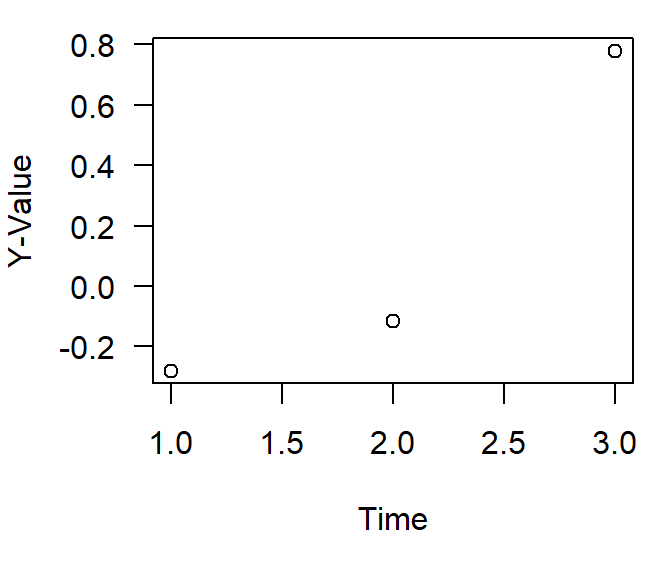

Time series Analysis (Part II), How Much Data?
blog
time series
power
In my last post I gave a relatively high level overview of time series and some basic analyses. Next we are going to talk about how much data is needed to perform some of these basic tests. Not necessarily the ins and outs (i.e. assumptions) of the statistical test(s) but how much data is needed to (1) run the test and (2) get a meaningful result. Most of this will be a discussion (with exercises) on statistical power. We will be also bring back our synthetic data functions introduced in the last post to provide some context. Most of the discussion will be centered around the Kendall family of trend tests.
Statistical Power
… most of you probably knew that was coming.
What is statistical power? … No, its not the lesser known cousin of the Sword of Power (aka Sword of Grayskull).
Statistical power, or sensitivity, is the likelihood of a significance test detecting an effect when there actually is one. Or another way of saying this is statistical power refers to the probability of correctly rejecting a false null hypothesis. If you are up on your types of statistical error this sounds like Type II error, right? Its related but statistical error and Type II error are different things.
Type I Error (α): This is the probability of rejecting a true null hypothesis. It represents the likelihood of finding a “false positive,” or detecting an effect that does not actually exist.
Type II Error (β): This is the probability of failing to reject a false null hypothesis. It represents the likelihood of a “false negative,” or not detecting an effect that actually exists.
Power (1- β): Power is the probability of correctly rejecting a false null hypothesis. It measures the likelihood that a study will detect a significant effect if one truly exists.
Since power (1- β) and Type II error (β) are directly related, high statistical power means a high likelihood of detecting an effect if it exist, thereby reducing the chance of a Type II error.
As you would expect given these definitions several factors can effect statistical likelihood and therefore statistical power. The first and foremost is the number of samples needed.
Minimum number of samples
I often get asked how many samples do I need or what criterion did you use to screen the dataset to perform the trend test. Technically you only need two points to draw a line, but with those two points you don’t have the ability to understand the uncertainty (i.e. variance) of said line.
Whats the absolute minimum needed to run the test? Most trend tests require 2 - 3 values to just do the math. Lets take the Kendall correlation as an example
set.seed(123)
yval2 <- rnorm(2)*0.5
xval2 <- 1:length(yval2)
cor.test(yval2,xval2,method="kendall")
Kendall's rank correlation tau
data: yval2 and xval2
T = 1, p-value = 1
alternative hypothesis: true tau is not equal to 0
sample estimates:
tau
1 set.seed(123)
yval3 <- rnorm(3)*0.5
xval3 <- 1:length(yval3)
cor.test(yval3,xval3,method="kendall")
Kendall's rank correlation tau
data: yval3 and xval3
T = 3, p-value = 0.3333
alternative hypothesis: true tau is not equal to 0
sample estimates:
tau
1 
What does this mean? For the Mann-Kendall test, the test statistic \(S\) is calculated as the sum of signs of differences between all pairs of observations therefore you only technically need two points to perform the test … but again this lacks any certainty and does not have a robust amount of data to accurately estimate the statistical likelihood. We can do a thought experiment to look at the number of samples to calculate the exact critical values for the \(S\) statistic. This can be achieved by calculating all possible \(S\) values for a given sample size \(n\) and determining the probabilities of obtaining these values under the null hypothesis of no trend.
Here is the basic functions needed to generate the critical value look-up table for the Mann-Kendall \(S\) statistic.
calculate_S: This function calculates the Mann-Kendall \(S\)-Statistic for a given vector (x). It loops over all pairs \((i,j)\) to compute the sum of signs. In the correlation test examples above this is theTstatistic.calculate_Smax: This function calculates the \(S_{max}\) value for a given sample size (\(n\)).generate_lookup_table: This function generates all possible permutations of ranks for a given sample size \(n\), calculates \(S\) for each permutation, and then tabulates the frequency of each unique \(S\) value. It calculates the probability of each \(S\)-value by dividing its frequency by the total number of permutations.
library(gtools) # for permutations
# Define function to calculate Mann-Kendall S statistic
calculate_S <- function(x) {
n <- length(x)
S <- 0
for (i in 1:(n - 1)) {
for (j in (i + 1):n) {
S <- S + sign(x[j] - x[i])
}
}
return(S)
}
calculate_Smax <- function(n){n*(n-1)/2}
# Function to generate look-up table for a given sample size n
generate_lookup_table <- function(n) {
# Generate all possible permutations of ranks
rank_permutations <- permutations(n, n, v = 1:n)
# Calculate S for each permutation
S_values <- apply(rank_permutations, 1, calculate_S)
# Count frequency of each S value
S_table <- table(S_values)
# Calculate probabilities
total_permutations <- factorial(n)
prob_table <- data.frame(
S = as.numeric(names(S_table)),
Frequency = as.integer(S_table),
# Smax = as.integer(n*(n-1)/2),
Probability = as.integer(S_table) / total_permutations
)
return(prob_table)
}Lets look at samples sizes of 2, 3, 4 and 5. Any more than that and the process get bogged down (due to the computation of individual permutations). Lets use the lapply function to generate look up tables for a range of n values.
# Generate look-up tables for sample sizes n = 2, 3, 4, 5 and 10
lookup_tables <- lapply(2:5, generate_lookup_table)
smax_val <- calculate_Smax(2:5)
names(lookup_tables) <- paste0("n=", 2:5,"; Smax = ",smax_val)
# Display the look-up tables
lookup_tables$`n=2; Smax = 1`
S Frequency Probability
1 -1 1 0.5
2 1 1 0.5
$`n=3; Smax = 3`
S Frequency Probability
1 -3 1 0.1666667
2 -1 2 0.3333333
3 1 2 0.3333333
4 3 1 0.1666667
$`n=4; Smax = 6`
S Frequency Probability
1 -6 1 0.04166667
2 -4 3 0.12500000
3 -2 5 0.20833333
4 0 6 0.25000000
5 2 5 0.20833333
6 4 3 0.12500000
7 6 1 0.04166667
$`n=5; Smax = 10`
S Frequency Probability
1 -10 1 0.008333333
2 -8 4 0.033333333
3 -6 9 0.075000000
4 -4 15 0.125000000
5 -2 20 0.166666667
6 0 22 0.183333333
7 2 20 0.166666667
8 4 15 0.125000000
9 6 9 0.075000000
10 8 4 0.033333333
11 10 1 0.008333333Each look-up table contains:
S: The possible Mann-Kendall statics values
Frequency: The frequency of each \(S\)-value among all permutations
Probability: The probability of obtaining each S-value under the null hypothesis.
Smax: The maximum possible value of \(S\) for a given sample size. \(S_{max}\) is useful for determining critical values and conducting hypothesis tests in the Mann-Kendall trend test, particularly when assessing the significance of the observed \(S\)-statistic under the null hypothesis of no trend.
As you can see a sample size of two (n=2) you have a an equal chance (probability) of accepting or rejecting your hypothesis.
While this section pertains to how few samples are needed to do the test, its worth mentioning the other side of the coin. When sample sizes increase some of the mathematics changes slightly. For instance when \(n\) is large (a relative term … lets just say \(n\ge10\)), the standardized \(S\) (often denoted as \(Z\)) approximately follows a normal distribution. This allows the use of z-scores to determine statistical significance of the observed \(S\)-statistic.
Now that we know the fundamentals of two points make a straight line … we can move onto statistical power.
How to do a power analysis
Statistical power analysis can be performed a couple different ways. For this post, lets assume this is a post-hoc statistical power analysis (remember you can do as power analysis before collecting samples to determine how many samples you need). In this example we will use a power calculation for a general linear model to approximate the power. The reason for the caveat is a general linear model is NOT a trend test (unless the data and model residuals fit the assumptions of the test … fat chance) and is different from the the Mann-Kendall and Thiel-Sen estimator.
pwr
The pwr::pwr.f2.test(...) is a function to calculate the statistical power for a linear model. Its pretty straight forward …
library(pwr)
# Define parameters
effect_size <- 0.15 # Estimate of the effect size (can be calculated or approximated)
alpha <- 0.05 # Significance level
power <- 0.8 # Desired power
# Perform power analysis for linear regression
sample_size <- pwr.f2.test(u = 1, f2 = effect_size, sig.level = alpha, power = power)
# Output the required number of samples
sample_size
Multiple regression power calculation
u = 1
v = 52.315
f2 = 0.15
sig.level = 0.05
power = 0.8u = 1represents one predictor variable (time, in this case).f2is the effect size (Cohen’s \(f^{2}\)) for linear models and is calculated using the models \(R_{2}\).
\(f^{2} = \frac{R^{2}}{1 - R^{2}}\)
Of course knowing the effect size and power is half the information we want to know. Another way to do a power analysis and probably a more meaningful way would be a simulation based test. I’ll show you two different versions, a very basic version and a more elaborate version based off an analysis presented by Dr Schramm in this paper.
Basic Simulation
set.seed(123)
# Parameters
true_slope <- 0.05 # Slope of the trend
sigma <- 1 # Standard deviation of errors
n_sim <- 1000 # Number of simulations
sample_sizes <- seq(20, 100, by = 5) # Range of sample sizes to test
alpha <- 0.05
# Function to simulate data and fit regression model
power_simulation <- function(n) {
significant_results <- 0
for (i in 1:n_sim) {
x <- 1:n
y <- true_slope * x + rnorm(n, mean = 0, sd = sigma)
model <- lm(y ~ x)
if (summary(model)$coefficients[2, 4] < alpha) { # p-value of slope
significant_results <- significant_results + 1
}
}
return(significant_results / n_sim)
}
# Run simulations for each sample size
power_results <- sapply(sample_sizes, power_simulation)A power of 0.80 is typically considered appropriate, which equates to a 20% chance of encountering a Type II error. Remember from above the definition of power, if we are sampling from a population where the null hypothesis is false, the power is calculated as
where \(N\) is the total number of tests and \(N_{rejected}\) are the total number of times the test rejected the null hypothesis. I highly recommend reading this paper for a great IRL example of estimating statistical power in trend analyses. I’ve personally used variants of this but they haven’t officially made it into my peer-reviewed pubs yet.
Simulation Based Power Analysis
Similar to our our dat2 time series from the prior post we are adding in some extra noise.
n.yrs <- 20
n.vals <- n.yrs*12
dat <- simulate_timeseries_vol(
n = n.vals, # About 20 years of daily data
trend_slope = 0.05, # Upward trend
seasonal_amp = 2, # Base seasonal amplitude
seasonal_period = 12, # Monthly seasonality
init_vol = 0.5, # Initial volatility
vol_persistence = 0.65,
rw_sd = 0.3
)
## add some years and months
dat$timeseries <- cbind(dat$timeseries,
expand.grid(Mon = 1:12, Yr = 1990:(1990+(n.yrs-1)))
)
dat$timeseries$date <- with(dat$timeseries,as.Date(paste(Yr,Mon,"01",sep="-")))
Lets aggregate the data to year (Yr) for this example by calculating the annual mean
library(plyr)
dat_yr <- ddply(dat$timeseries,c("Yr"),summarise,
mean.val = mean(value),
sd.val = sd(value)
)Much like the basic simulation power analysis presented about this method will also use a simulation.
library(mblm)
yrs <- seq(min(dat_yr$Yr),max(dat_yr$Yr))
yrs2 <- yrs[3:length(yrs)]
nsims <- 1000
pvalues <- NA
power.trend.detect <- data.frame()
set.seed(123)
for(i in 1:length(yrs2)){
tmp.dat <- subset(dat_yr,Yr%in%seq(yrs[1],yrs2[i]))
for (j in 1:nsims) {
yval <- rnorm(n=length(tmp.dat$mean.val),
mean=tmp.dat$mean.val,
sd=sd(tmp.dat$mean.val))
trend.test <- with(tmp.dat,
cor.test(yval,Yr,method="kendall"))
pvalues[j] <- trend.test$p.value
}
thiel_sen <- mblm(mean.val~Yr,tmp.dat)
trend <- with(tmp.dat,cor.test(mean.val,Yr,method="kendall"))
power <- sum(pvalues < 0.05)/nsims
rslt <- data.frame(Yr=yrs2[i],
slope = as.numeric(coefficients(thiel_sen)[2]),
kendall.tau = as.numeric(trend$estimate),
kendall.pval = as.numeric(trend$p.value),
trend.power=power)
power.trend.detect <- rbind(power.trend.detect,rslt)
}
power.trend.detect$yrs <- power.trend.detect$Yr-min(dat_yr$Yr)
power.trend.detect Yr slope kendall.tau kendall.pval trend.power yrs
1 1992 0.3503085 0.3333333 1.000000e+00 0.000 2
2 1993 0.5555924 0.6666667 3.333333e-01 0.000 3
3 1994 0.7112633 0.8000000 8.333333e-02 0.096 4
4 1995 0.7071783 0.8666667 1.666667e-02 0.161 5
5 1996 0.6867529 0.9047619 2.777778e-03 0.290 6
6 1997 0.7071783 0.9285714 3.968254e-04 0.411 7
7 1998 0.7596028 0.9444444 4.960317e-05 0.549 8
8 1999 0.7071783 0.9111111 2.976190e-05 0.620 9
9 2000 0.6916715 0.8545455 4.624619e-05 0.643 10
10 2001 0.6722881 0.8484848 1.634233e-05 0.742 11
11 2002 0.6712462 0.7179487 2.839785e-04 0.616 12
12 2003 0.6504437 0.6483516 7.575015e-04 0.620 13
13 2004 0.5643232 0.6571429 3.303709e-04 0.688 14
14 2005 0.5611362 0.6833333 8.266192e-05 0.721 15
15 2006 0.4400709 0.7205882 1.148789e-05 0.750 16
16 2007 0.4299183 0.7516340 1.442393e-06 0.856 17
17 2008 0.4121871 0.7777778 1.649783e-07 0.878 18
18 2009 0.4167471 0.8000000 1.731000e-08 0.926 19dat datasetBased on this analysis, due to the variability in the data it took almost 18 simulated years of data before it reached a power of ≥ 0.80. Meanwhile, we didn’t see a “significant” trend until year five despite a relative low “power”. As more years were added, the power increased. Now this is based on annually aggregated data and an annual trend test. This could also be done on a seasonal Kendall trend test, which probably show different results given the seasonal nature of the data. We can also tune the knobs on the synthetic data function to see how things change given all the factors.
Given all this trend analyses and power of the test are dependent upon several factors, including getting at the minimum number of samples needed. These factors include, but are not limited to:
Trend Strength: For a “strong” trend, fewer points might suffice, but “weaker” trends require more data points to confidently discern a pattern.
Data Variability: Higher variability in the data means more points are needed to distinguish a trend from random fluctuations.
Seasonality and Autocorrelation: If there’s seasonality or serial correlation, you may need to account for it or have more data points to ensure the test’s assumptions are met.
Whats next?
In this post we went over some of the ins and outs of how many data points/samples are needed for a trend analysis and looked at how to determine statistical power. I think for the next post we will talk about seasonal trend analyses. Stay Tuned!!
Session Info
- Session info ---------------------------------------------------------------
setting value
version R version 4.1.0 (2021-05-18)
os Windows 10 x64 (build 19045)
system x86_64, mingw32
ui RTerm
language (EN)
collate English_United States.1252
ctype English_United States.1252
tz America/New_York
date 2024-11-03
pandoc 2.19.2
quarto 1.3.450
- Packages -------------------------------------------------------------------
package * version date (UTC) lib source
AnalystHelper * 0.1.5 2024-10-31 [] local
gtools * 3.9.4 2022-11-27 [] CRAN (R 4.1.3)
mblm * 0.12.1 2019-01-26 [] CRAN (R 4.1.1)
plyr * 1.8.8 2022-11-11 [] CRAN (R 4.1.3)
pwr * 1.3-0 2020-03-17 [] CRAN (R 4.1.3)
sessioninfo * 1.2.2 2021-12-06 [] CRAN (R 4.1.3)
------------------------------------------------------------------------------